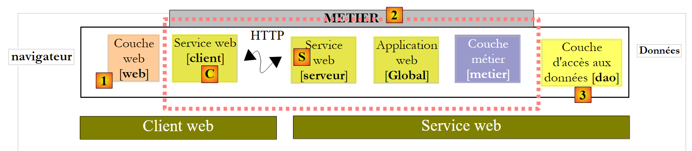
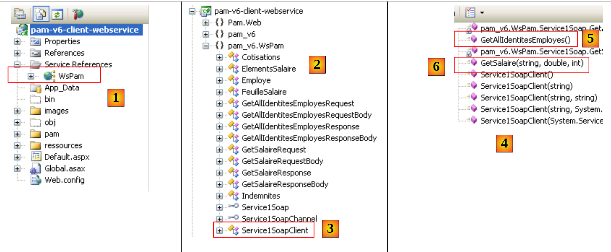
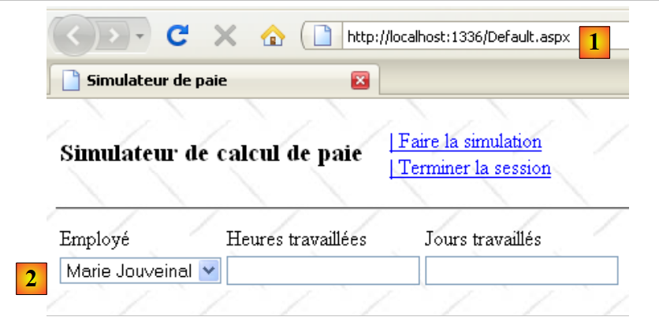

10. L'application [SimuPaie] – version 6 – client ASP.NET d'un service web
10.1. L'architecture de l'application
Nous faisons évoluer l'architecture client / serveur du test NUnit de la façon suivante :
 |
En [1], le test NUnit est remplacé par l'application web de la version 8. Il faut se rappeler ici que cette architecture comporte deux serveurs web non représentés :
- un serveur web qui exécute le service web [S]. Il s'exécutera dans une première instance de Visual Web Developer.
- un serveur web qui exécute le client web [1]. Il s'exécutera dans une deuxième instance de Visual Web Developer.
10.2. Le projet Visual Web Developer du client [web]
Nous créons un nouveau projet Web ASP.NET :
 |
- en [1], nous choisissons un projet web en C#
- en [2], nous choisissons "Application Web ASP.NET"
- en [3], nous donnons un nom au projet web
- en [4], nous indiquons un emplacement pour ce projet
- en [5], le projet créé
Nous modifions quelques propriétés du projet :
 |
- en [1], le nom de l'assemblage qui sera généré
- en [2], l'espace de noms par défaut des classes et interfaces qui seront créées
Pour construire le projet [pam-v6-client-webservice] on peut récupérer les fichiers [Global.asax] et [Default.aspx] du projet web [pam-v4-3tier-nhibernate-multivues-monopage] et les copier dans le projet [pam-v6-client-webservice]. On fait cela avec l'explorateur windows tout d'abord :
 |
- en [1], le dossier du projet [pam-v4-3tier-nhibernate-multivues-monopage]
- en [2], le dossier du projet [pam-v6-client-webservice] après recopie
- des dossiers [images, pam, ressources]
- des fichiers [Global.asax, Global.asax.cs]
- des fichiers [Default.aspx, Default.aspx.cs, Default.aspx.designer.cs]
- en [3], dans Visual Studio Express, on fait afficher tous les fichiers du projet, pour faire apparaître les fichiers nouvellement ajoutés
- en [4], on inclut dans le projet les dossiers et fichiers ajoutés
 |
- en [5] le nouveau projet [pam-v6-client-webservice]
A ce stade, on peut générer le projet une première fois [6]. On obtient les erreurs suivantes :
Pour comprendre ces erreurs et les corriger, il faut revenir à l'architecture du projet web en construction :
 |
Le projet [pam-v6-client-webservice] est la couche [web] [1] dans le schéma ci-dessus. On voit que cette couche communique avec le client [C] du service web, un client que nous allons générer prochainement.
- les erreurs 2, 5, 7 viennent du fait que le code de [pam-v4] référençait la DLL de la couche [metier], DLL qui est maintenant du côté serveur et non du côté client.
- les erreurs 1, 3 ont la même cause, mais cette fois pour la DLL de la couche [dao]
- l'erreur 4 vient du fait que le code de [Global.asax] utilise Spring et que notre projet ne référence pas la DLL de Spring. Nous allons ajouter cette référence.
- l'erreur 6 vient du fait que la classe [Employe] est définie dans la couche [dao] qui n'existe pas côté client.
Les erreurs d'espace de noms 1, 2, 4, 5, 6, 7 vont être résolues par la génération du client C du service web. L'erreur 3 est résolue en ajoutant au projet une référence sur la DLL de Spring. Nous pouvons procéder comme suit :
 |
- en [1], on ajoute une référence au projet [pam-v6-client-webservice]
- en [4], on a ajouté une référence sur la DLL [Spring.Core] du dossier [lib].
Après l'ajout de cette référence sur Spring, la génération du projet présente une erreur en moins. Toutes les autres erreurs sont dues à des lignes de code qui référencent des objets des couches [metier] et [dao] qui sont maintenant sur le serveur. Nous verrons que ces objets manquants seront générés dans le client [C] du service web.
 |
Avant de générer le client [C] du service web, nous allons modifier l'espace de noms des différentes classes présentes. Elles sont actuellement dans l'espace de noms [pam-v4]. Nous changeons cet espace de noms en [pam-v6]. Les fichiers concernés sont les suivants : Default.aspx.cs, Default.aspx.designer.cs, Global.asax.cs. Par exemple :
....
namespace pam_v6
{
public class Global : System.Web.HttpApplication
{
// --- données statiques de l'application ---
public static Employe[] Employes;
public static IPamMetier PamMetier = null;
....
Ligne 2, l'espace de noms pam_v4 a été remplacé par l'espace de noms pam_v6.
Par ailleurs, il faut modifier le balisage des fichiers : Default.aspx et Global.asax :
 |
Le balisage de [Default.aspx] devient :
<%@ Page Language="C#" AutoEventWireup="true" CodeFile="Default.aspx.cs" Inherits="pam_v6.PagePam" %>
<!DOCTYPE html PUBLIC "-//W3C//DTD XHTML 1.0 Transitional//EN" "http://www.w3.org/TR/xhtml1/DTD/xhtml1-transitional.dtd">
.....
Ligne 1, l'attribut Inherits désigne le nom de la classe du fichier [Default.aspx.cs]. On change l'espace de noms.
Le balisage de [Global.asax] devient :
<%@ Application Codebehind="Global.asax.cs" Inherits="pam_v6.Global" Language="C#" %>
Ci-dessus, on change l'espace de noms de l'attribut Inherits.
Nous générons maintenant le client [C] du service web.
 |
Pour faire les opérations qui suivent, il faut que le service web [S] [pam-v5-webservice] soit lancé dans une autre instance de Visual Web Developer.
 |
- en [1], on ajoute au projet [pam-v6-client-webservice], une référence au service web [pam-v5-webservice]
- en [2], l'URI du service web [pam-v5-webservice]. C'est l'URL du fichier WSDL de ce service web. Dans la construction du service web [pam-v5-webservice], on a indiqué comment connaître cette Url.
- en [3], on demande à l'assistant d'exploiter le fichier WSDL indiqué en [2]
- en [4], le service web [Service1Soap] découvert et en [5] les méthodes distantes qu'il expose.
- en [6], on fixe l'espace de noms dans lequel les classes et interfaces du client [C] vont être générées
- on lance la génération du client [C]
 |
- en [1], le client généré. On double-clique dessus pour avoir accès à son contenu.
- en [2], dans l'explorateur d'objets, les classes et interfaces de l'espace de noms pam_v6.WsPam sont affichées. C'est l'espace de noms du client généré.
- en [3], la classe qui implémente le client du service web.
- en [4], les méthodes implémentées par le client [Service1SoapClient]. On y retrouve les deux méthodes du service web distant [5] et [6].
- en [2], on retrouve les images des entités des couches :
- [metier] : FeuilleSalaire, ElementsSalaire
- [dao] : Employe, Cotisations, Indemnites
Dans la suite, il faut se rappeler que ces images des entités distantes se trouvent côté client et dans l'espace de noms pam_v6.WsPam.
Examinons les méthodes et propriétés exposées par l'une d'elles :
 |
- en [1], on sélectionne la classe [Employe] locale
- en [2], on retrouve les propriétés de l'entité [Employe] distante ainsi que des champs privés utilisés pour les besoins propres de l'entité locale.
Examinons le code de [Global.asax.cs] qui présente des erreurs :
 |
- les lignes 3 et 4 utilisent des espaces de noms qui existent sur le serveur mais pas chez le client.
- la ligne 13 utilise une classe [Employe] dont on n'a pas déclaré le bon espace de noms
- la ligne 14 utilise une interface IPamMetier inconnue chez le client.
Nous avons déjà rencontré des problèmes similaires dans le client C# étudié précédemment.
Dans l'architecture :
 |
- la couche [metier] locale est implémentée par le client [C] de type pam_v6.WsPam.Service1SoapClient qui n'implémente pas l'interface IPamMetier même si par ailleurs elle présente des méthodes de mêmes noms.
- les entités manipulées (Employe, Indemnites, Cotisations) par le client [C] généré sont dans l'espace de noms pam_v6.WsPam
Le code de [Global.asax.cs] évolue comme suit :
using System;
using System.Collections.Generic;
using Pam.Web;
using Spring.Context.Support;
using pam_v6.WsPam;
namespace pam_v6
{
public class Global : System.Web.HttpApplication
{
// --- données statiques de l'application ---
public static Employe[] Employes;
public static Service1SoapClient PamMetier = null;
public static string Msg;
public static bool Erreur = false;
// démarrage de l'application
public void Application_Start(object sender, EventArgs e)
{
// exploitation du fichier de configuration
try
{
// instanciation couche [metier]
PamMetier = ContextRegistry.GetContext().GetObject("pammetier") as Service1SoapClient;
// liste simplifiée des employés
Employes = PamMetier.GetAllIdentitesEmployes();
// on a réussi
Msg = "Base chargée...";
}
catch (Exception ex)
{
// on note l'erreur
Msg = string.Format("L'erreur suivante s'est produite lors de l'accès à la base de données : {0}", ex);
Erreur = true;
}
}
public void Session_Start(object sender, EventArgs e)
{
// on met une liste de simulations vide dans la session
List<Simulation> simulations = new List<Simulation>();
Session["simulations"] = simulations;
}
}
}
La ligne 24 instancie la couche [C] grâce à Spring. La configuration nécessaire à cette instanciation est faite dans [web.config] :
<configSections>
<sectionGroup name="system.web.extensions" type="System.Web.Configuration.SystemWebExtensionsSectionGroup, System.Web.Extensions, Version=3.5.0.0, Culture=neutral, PublicKeyToken=31BF3856AD364E35">
...
</sectionGroup>
<sectionGroup name="spring">
<section name="context" type="Spring.Context.Support.ContextHandler, Spring.Core" />
<section name="objects" type="Spring.Context.Support.DefaultSectionHandler, Spring.Core" />
</sectionGroup>
</configSections>
<spring>
<context>
<resource uri="config://spring/objects" />
</context>
<objects xmlns="http://www.springframework.net">
<object id="pammetier" type="pam_v6.WsPam.Service1SoapClient,pam-v6-client-webservice"/>
</objects>
</spring>
Ligne 16, la couche [metier] est une instance de la classe [pam_v6.WsPam.Service1SoapClient] qui sera trouvée dans la DLL [pam-v6-client-webservice]. On rappelle que nous avons configuré le projet [pam-v6-client-webservice] pour qu'il génère cette DLL.
Il reste encore quelques erreurs dans [Default.aspx.cs] :
 |  |
- lignes 5, 6 : ces espaces de noms n'existent plus. Les entités sont désormais dans l'espace de noms pam_v6 ou pam_v6.WsPam.
- ligne 98 : le client généré [C] n'a pas repris la classe [PamException] de la couche [dao]. Il ne le pouvait pas puisque le service web n'expose pas cette exception. On choisit de remplacer PamException par sa classe parent Exception.
Le code devient :
...
using System.Web.UI.WebControls;
using pam_v6.WsPam;
namespace pam_v6
{
public partial class PagePam : Page
{
...
...
try
{
feuillesalaire = Global.PamMetier.GetSalaire(DropDownListEmployes.SelectedValue, HeuresTravaillées, JoursTravaillés);
}
catch (Exception ex)
{
...
Une fois ces erreurs corrigées, nous pouvons exécuter l'application web :
 |
- en [1], l'URL du client web du service web distant
- en [2], le combo des employés a été rempli. Les données qu'il contient proviennent du service web.
Nous invitons le lecteur à tester cette version 6 copie de la version 4.